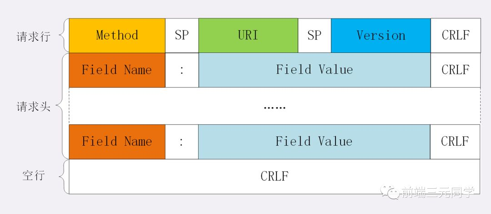
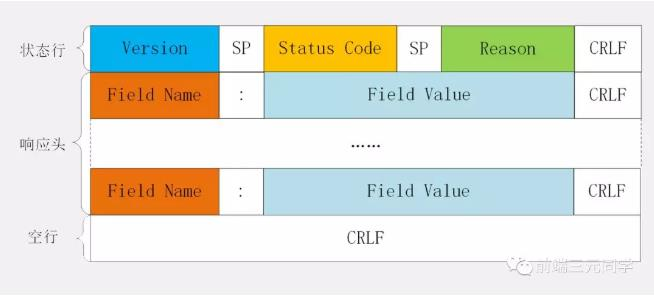
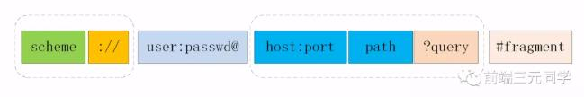

说自己的是Java Web程序员，每天和HTTP协议打交道，你对它到底了解多少？ 理解HTTP对你了解整个交互过程至关重要，建议细品-精度，了解过后，你的每一次请求在你眼中都是透明的。 每次请求就好比过海关，你要严格监管！
无论多么天衣无缝的犯罪，只要是人为的就没有解不开的道理，技术亦是如此！
001. HTTP 报文结构是怎样的？
对于 TCP 而言，在传输的时候分为两个部分:TCP头和数据部分。
而 HTTP 类似，也是header + body的结构，具体而言:
起始行 + 头部 + 空行 + 实体
由于 http 请求报文和响应报文是有一定区别，因此我们分开介绍。
起始行 对于请求报文来说，起始行类似下面这样:
GET /home HTTP/1.1
也就是方法 + 路径 + http版本。
对于响应报文来说，起始行一般张这个样:
HTTP/1.1200 OK
响应报文的起始行也叫做状态行。由http版本、状态码和原因三部分组成。
值得注意的是，在起始行中，每两个部分之间用空格隔开，最后一个部分后面应该接一个换行，严格遵循ABNF语法规范。
头部
展示一下请求头和响应头在报文中的位置:


不管是请求头还是响应头，其中的字段是相当多的，而且牵扯到http非常多的特性， 这里就不一一列举的，重点看看这些头部字段的格式：
字段名不区分大小写
字段名不允许出现空格，不可以出现下划线_
字段名后面必须紧接着:
空行:
很重要，用来区分开头部和实体。----- 问: 如果说在头部中间故意加一个空行会怎么样？----- 答：那么空行后的内容全部被视为实体。
实体
就是具体的数据了，也就是body部分。请求报文对应请求体, 响应报文对应响应体。
002. 如何理解 HTTP 的请求方法？
有哪些请求方法？
http/1.1规定了以下请求方法(注意，都是大写):
GET: 通常用来获取资源
HEAD: 获取资源的元信息
POST: 提交数据，即上传数据
PUT: 修改数据
DELETE: 删除资源(几乎用不到)
CONNECT: 建立连接隧道，用于代理服务器
OPTIONS: 列出可对资源实行的请求方法，用来跨域请求
TRACE: 追踪请求-响应的传输路径
GET 和 POST 有什么区别？
首先最直观的是语义上的区别。---- 而后又有这样一些具体的差别:
从缓存的角度，GET 请求会被浏览器主动缓存下来，留下历史记录，而 POST 默认不会。
从编码的角度，GET 只能进行 URL 编码，只能接收 ASCII 字符，而 POST 没有限制。
从参数的角度，GET 一般放在 URL 中，因此不安全，POST 放在请求体中，更适合传输敏感信息。
从幂等性的角度，GET是幂等的，而POST不是。(幂等表示执行相同的操作，结果也是相同的)
从TCP的角度，GET 请求会把请求报文一次性发出去，而 POST 会分为两个 TCP 数据包，首先发 header 部分，如果服务器响应 100(continue)， 然后发 body 部分。(火狐浏览器除外，它的 POST 请求只发一个 TCP 包)
003: 如何理解 URI？
URI, 全称为(Uniform Resource Identifier), 也就是统一资源标识符，它的作用很简单，就是区分互联网上不同的资源。
但是，它并不是我们常说的网址, 网址指的是URL, 实际上URI包含了URN和URL两个部分，由于 URL 过于普及，就默认将 URI 视为 URL 了。
URI 的结构
URI 真正最完整的结构是这样的。

可能你会有疑问，好像跟平时见到的不太一样啊！先别急，我们来一一拆解。
scheme 表示协议名，比如http, https, file等等。后面必须和://连在一起。
user:passwd@ 表示登录主机时的用户信息，不过很不安全，不推荐使用，也不常用。
host:port表示主机名和端口。
path表示请求路径，标记资源所在位置。
query表示查询参数，为key=val这种形式，多个键值对之间用&隔开。
fragment表示 URI 所定位的资源内的一个锚点，浏览器可以根据这个锚点跳转到对应的位置。
举个例子:
https://www.baidu.com/s?wd=HTTP&rsv_spt=1
这个 URI 中，https即scheme部分，www.baidu.com为host:port部分（注意，http 和 https 的默认 端口分别为80、443），/s为path部分，而wd=HTTP&rsv_spt=1就是query部分。
URI 编码
URI 只能使用ASCII, ASCII 之外的字符是不支持显示的，而且还有一部分符号是界定符，如果不加以处 理就会导致解析出错。
因此，URI 引入了编码机制，将所有非 ASCII 码字符和界定符转为十六进制字节值，然后在前面加个%。
如，空格被转义成了%20，三元被转义成了%E4%B8%89%E5%85%83。
004: 如何理解 HTTP 状态码？
RFC 规定 HTTP 的状态码为三位数，被分为五类:
1xx: 表示目前是协议处理的中间状态，还需要后续操作。
2xx: 表示成功状态。
3xx: 重定向状态，资源位置发生变动，需要重新请求。
4xx: 请求报文有误。
5xx: 服务器端发生错误。
接下来就一一分析这里面具体的状态码。
01
101 Switching Protocols。在HTTP升级为WebSocket的时候，如果服务器同意变更，就会发送状态码 101。
02
200 OK是见得最多的成功状态码。通常在响应体中放有数据。
204 No Content含义与 200 相同，但响应头后没有 body 数据。
206 Partial Content顾名思义，表示部分内容，它的使用场景为 HTTP 分块下载和断电续传，当然也会带 上相应的响应头字段Content-Range。
03
301 Moved Permanently即永久重定向，对应着302 Found，即临时重定向。 比如你的网站从 HTTP 升级到了 HTTPS 了，以前的站点再也不用了，应当返回301，这个时候浏览器默认会做缓存优化，在第二次访问的时候自动访问重定向的那个地址。 而如果只是暂时不可用，那么直接返回302即可，和301不同的是，浏览器并不会做缓存优化。
304 Not Modified: 当协商缓存命中时会返回这个状态码。详见浏览器缓存
04
400 Bad Request: 开发者经常看到一头雾水，只是笼统地提示了一下错误，并不知道哪里出错了。
403 Forbidden: 这实际上并不是请求报文出错，而是服务器禁止访问，原因 有很多，比如法律禁止、信息敏感。
404 Not Found: 资源未找到，表示没在服务器上找到相应的资源。
405 Method Not Allowed: 请求方法不被服务器端允许。
406 Not Acceptable: 资源无法满足客户端的条件。
408 Request Timeout: 服务器等待了太长时间。
409 Conflict: 多个请求发生了冲突。
413 Request Entity Too Large: 请求体的数据过大。
414 Request-URI Too Long: 请求行里的 URI 太大。
429 Too Many Request: 客户端发送的请求过多。
431 Request Header Fields Too Large请求头的字段内容太大。
05
500 Internal Server Error: 仅仅告诉你服务器出错了，出了啥错咱也不知道。
501 Not Implemented: 表示客户端请求的功能还不支持。
502 Bad Gateway: 服务器自身是正常的，但访问的时候出错了，啥错误咱也不知道。
503 Service Unavailable: 表示服务器当前很忙，暂时无法响应服务。
待续。。。。。。
还有很多很多的总结，请参看下文！
站内搜索
文章归档
博主推荐